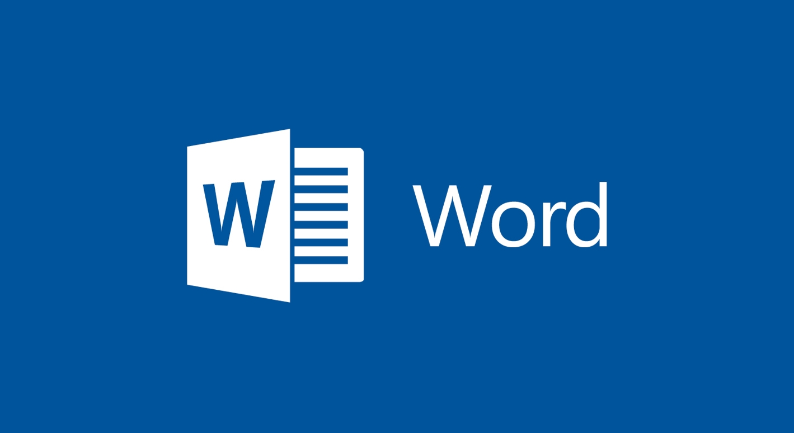

Cursos Disponiveis

Fundamentos de TI
Venha apender um pouco mais sobre TI, desde o Hardware e Softwares.
inscreva-se
HTML - Básico
Curso de HTML básico para despertar sua criatividade sobre como os sites são feitos.
inscreva-se

Introdução a redes De computadores
Descubra como são feitas as redes de computadores e como funciona essa ligação.
inscreva-se

Curso de Java - Básico
Java é uma linguagem muito usada, venha já aprender como utilizar essa famosa linguagem.
inscreva-se

EXCEL - Básico
Excel é uma ferramenta simples e bastante utilizada, descobra como utilizar a ferramenta já.
inscreva-se

Word - Básico
O Word é a ferramenta mais conhecida do office, descubra como é feita a edição de textos.
inscreva-se

PowerPoint - Básico
O PowerPoint é um aplicativo muito utilizado para desenvolver apresentações, com diversos recursos como: objetos gráficos (cliparts), símbolos, organogramas, fotos, entre outros recursos gráficos.
inscreva-se
Histórico de Cursos
Meus Cursos
SAIR